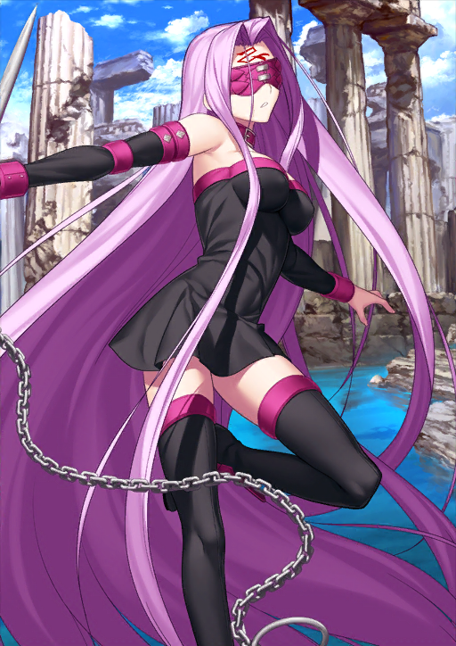

-
HP 15150
Saber
ATK 11221
Descrição
Um rei idealista que acredita que uma boa vida é tudo o que alguém precisa. Protege os fracos, pune os fortes e é uma pessoa completamente impecável. Calma e firme, ela é sempre séria e um ser humano exemplar. ...Mas, mesmo que ela não diga isso em voz alta, ela odeia perder. Ela não pega leve consigo mesma, e sente grande remorso quando perde.
-
HP 11521
Archer
ATK 9398
Descrição
Como sua origem é ligeiramente diferente de outros Espíritos Heroicos, você não pode chamá-lo de Espírito Heroico oficial. Ele é um Guardião e serve como sistema defensivo para a “inconsciência coletiva” da humanidade. Seu próprio ser é a Contra-Força da humanidade. Ele é um executor da justiça sem rosto escolhido pelos sem nome.
-
HP 8937
Rider
ATK 7200
Descrição
A mais nova das três irmãs Górgonas na mitologia grega. Originalmente uma deusa da terra, devido aos deuses do Olimpo e às crenças fanáticas do povo, ela foi forçada a fugir para a Ilha Sem Forma, onde se tornou um monstro que transformava as pessoas em pedra.